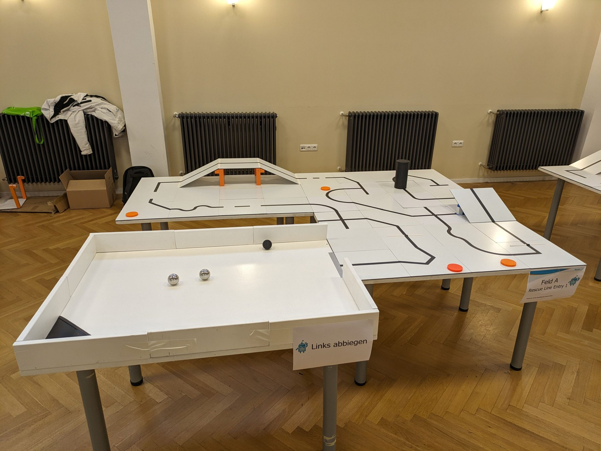
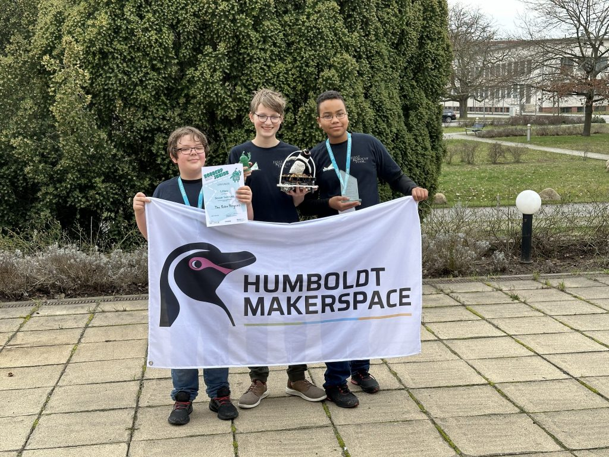

Einleitung
Am 02.03.2024 und am 03.03.2024 fand in Adlershof das RoboCupJunior Qualifikationsturnier statt. Es folgen zwei Berichte:
Rescue Line Entry
Team: Penguin Rescue Mission
In der Disziplin Rescue Line ist der Parcours mit einer schwarzen Linie markiert, die über mehrere auf- und absteigenden Rampen führt. Hindernisse zwingen den Roboter den die Linie zu verlassen und wiederzufinden. Das Ende des Parcours geht es in einen Raum, in dem mehrere Verschüttete (metallische und schwarze Kugeln) erkannt und geborgen werden müssen. Gegen 10:00 Uhr wurde der Wettbewerb durch Senatorin Katharina Günther-Wünsch (Senatorin für Bildung, Jugend und Familie) eröffnet. Von 11:40 Uhr bis 11:50 Uhr hatten wir den ersten von insgesamt drei Läufen. Leider erzielten wir weniger Punkte als gehofft. Trotzdem waren wir motiviert uns in den nächsten Läufen zu steigern. In den anschließenden Läufen konnten wir uns immer weiter steigern. Leider konnten wir uns nicht für die German Open qualifizieren, aber dafür das wir spontan für unsere Mitschüler eingesprungen sind und uns nur vier Tage vorbereiten konnten, sind wir mit unserem Ergebnis zufrieden. Nächstes Jahr wollen wir wieder teilnehmen und hoffen, dass wir dann besser abschneiden werden.
von Emily und Justus

Eine Rescue Line Arena

The Robo Penguins mit Pokal, Urkunde und Roboter
Soccer 1:1 Leightweight
Team: The Robo Penguins
Unsere Team bestehen aus Frederik Sauerwald, Kaspar Prinzen und Marvin Engel war voller Vorfreude auf das Turnier. Nach einer zweistündigen Vorbereitungszeit ging es mit den Wettkämpfen los. Insgesamt hatten noch fünf weitere Teams teilgenommen, gegen die wir am Wochenende mit unserem Fußballroboter spielen mussten. Während des Turniers hatten wir leider immer wieder technische Probleme, welche wir beheben mussten. Zusätzlich mussten wir viele Änderungen am Code machen, durch die der Roboter immer besser wurde. Nach vier gewonnenen Spielen hatten wir es mit einem sehr großen Problem zu tun: ein Kabel hatte sich von der Batterie gelöst und der Roboter ging nicht mehr an. Das Spiel hatte schon begonnen und wir mussten mit einem Rückstand von acht Toren ins Spiel einsteigen. Glücklicherweise konnten wir das Spiel drehen und gewannen mit 21:8. Auf der Siegerehrung erhielten wir einen Pokal für unseren ersten Platz, eine Urkunde und ein Souvenir, welche jetzt im Makerspace ausgestellt sind. Nach der Siegerehrung wurden wir von einem Reporter vom RBB angesprochen, ob wir unseren Roboter in der Abendshow gerne vorstellen würden. Dem haben wir voller Freude zugestimmt. Zur Feier des Sieges sind wir noch alle gemeinsam essen gegangen und hatten den Abend mit anderen Teilnehmern gefeiert.
Von Frederik